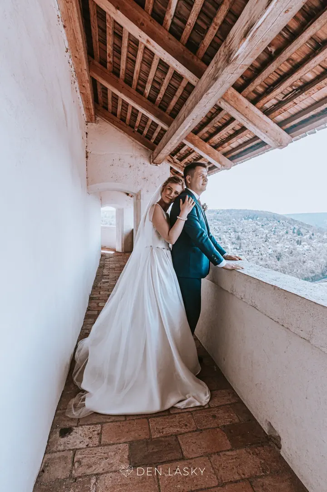
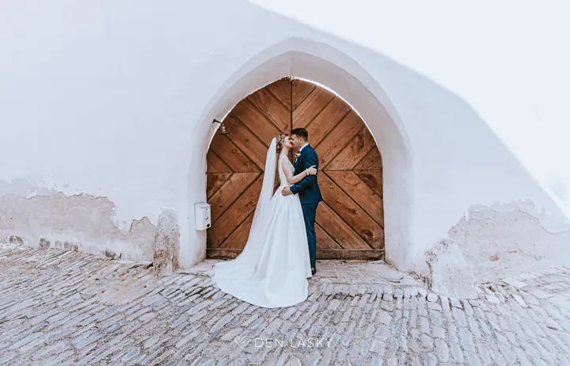
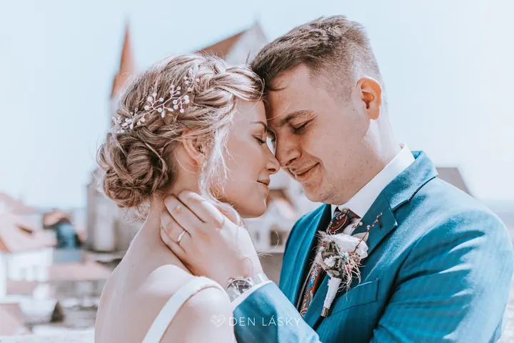

Svatební focení
Fotíme od ranních příprav až do 22:00 a součástí je i předsvatební focení. Dostanete stovky upravených fotografií v soukromé online galerii ve třech barevných profilech.





Jmenujeme se Den Lásky a ve Znojmě i po celé republice fotíme svatby, těhotenská, rodinná a párová focení. K fotografii přidáváme video a hudbu, takže vám na svatbě můžeme zahrát i jako DJ.
Více o mně
„Pojďme společně zachytit city a emoce.“
— Den Lásky
Fotíme od ranních příprav až do 22:00 a součástí je i předsvatební focení. Dostanete stovky upravených fotografií v soukromé online galerii ve třech barevných profilech.
Ozvučíme obřad i večerní party, včetně vlastního zvuku, světel a mlhy, a celým dnem vás provedeme. Na přání natočíme 360° videa, panoramata a záběry z dronu pro vaše sítě.
Fotit se můžete sama s bříškem, s tatínkem nebo s dětmi, které se těší na sourozence. Focení probíhá v ateliéru nebo na vašem oblíbeném místě.
Čistá láska a přirozené emoce vaší rodiny nebo páru. V ateliéru jsou vítaní i vaši domácí mazlíčci.
Den Lásky je projekt, za kterým stojí naše vášeň pro fotografii, video a hudbu. V uspěchané době často zapomínáme na chvíle, na kterých nám nejvíc záleží, a právě ty chceme uchovat tak, aby vás hřály ještě dlouhá léta.
Každá svatba je pro nás nový příběh. Vyprávíme ho obrazem, zvukem i hudbou: fotíme od ranních příprav do večera, ozvučíme obřad, zahrajeme na první tanec a na přání natočíme obsah na sítě včetně 360° videí a záběrů z dronu.
Mimo svatby fotíme v ateliéru i venku, na místě, které máte rádi. Přijďte s bříškem, s celou rodinou nebo ve dvou. A klidně i s vaším mazlíčkem, ten má k nám dveře vždycky otevřené.
Napíšete nám datum a místo a my ověříme, jestli je termín volný. Rezervace platí po zaplacení poloviny celkové částky.
Asi na hodinu se sejdeme a projdeme orientační scénář vaší svatby. Když jste daleko nebo v zahraničí, domluvíme se přes videohovor.
Poznáme se před objektivem a vyzkoušíte si, jak focení probíhá. Fotky pak můžete použít na pozvánky nebo svatební etikety na víno.
Fotíme od příprav až do 22:00. Upravené fotografie dostanete v soukromé online galerii, ve třech barevných profilech a připravené k výběru do fotoalba.
Svatební focení začíná na 35 000 Kč. Balíček FOTO + DJ vyjde na 52 000 Kč a Social media 360° s dronem stojí 7 000 Kč.
Za celý den vznikne 5 až 8 tisíc snímků, z nich vybereme a upravíme 400 až 800. Předáváme jen upravené fotografie, neupravené nedáváme.
Ano, dopravu po celé České republice máte zdarma. Koordinační schůzku zvládneme na dálku i online.
Ideální je mezi 6. a 8. měsícem těhotenství. Focení trvá obvykle 3 až 4 hodiny, stojí 3 500 Kč a těhotenské šaty vám můžeme zapůjčit.
Doporučujeme jednoduché oblečení bez potisku, barevně a stylově sladěné. Dobře funguje bílá, černá nebo světlé pastelové tóny.